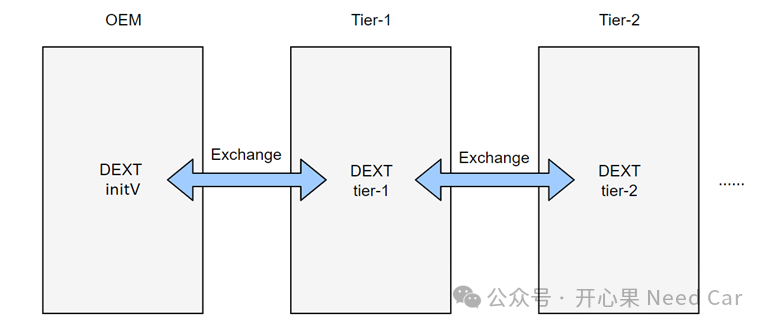

开心果 Need Car · 2025-09-04T06:20:00+08:00 · 微信原文
车辆诊断涉及的内容庞杂而琐碎。尤其随着车辆智能化的发展，车辆诊断需求和数据不断增加。诊断数据文件有很多种，比如：*.cdd、*.odx、*.pdx，甚至Excel等。OEM（Original Equipment Manufacturer，原始设备制造商）和供应商在车辆诊断功能的开发中，需要使用多种不同的合作模式，并采用不同的数据交互格式和工具。我们知道，数据交互是一项耗时的工作，并且需要保证交互信息的完整性和正确性。那么，有没有什么方案可以提高协作的效率？降低诊断数据的交互成本呢？有的，AUTOSAR诊断数据文件DEXT（Diagnostic Extract Template）为诊断开发提供一种可能。
1、什么是DEXT文件？
DEXT最初在AUTOSAR 4.2.1中发布。AUTOSAR 4.3.0在标准UDS协议之外，增加了OBD-II、WWH-OBD、FIM（Function Inhibition Manager）和SAE J1939的相关扩展内容。
简单理解，DEXT文件就是*.arxml文件。DEXT不仅描述通过各自协议传输的数据，还包括ECU应用层软件中初始数据。当上述两种数据的描述完整且正确时，即可通过DEXT文件配置AUTOSAR诊断相关BSW模块。AUTOSAR标准没有定义诊断协议、诊断服务和数据，而是直接使用了UDS和OBD-II的定义。
2、DEXT的作用是什么？
按照AUTOSAR规范解释：DEXT的主要目的是在诊断开发过程中，交互不同诊断模块的诊断数据，以便于诊断模块代码的自动生成。在AUTOSAR CP（Classic Platform）的软件架构中，诊断模块主要涉及DCM（Diagnostics Communication Manager）、DEM（Diagnostics Event Manager）、FIM（Function Inhibition Manager）。也就是说，如上诊断模块的配置信息可以定义、描述在DEXT文件中，通过导入配置工具，生成对应模块的配置代码，以此提升软件的开发效率。
DEXT具有可交互特性，使得诊断工作分布式开发成为可能。一般来说，OEM会给出一个初版诊断需求（DEXT initV），Tirer-1拿到DEXT initV后，会进一步完善诊断细节，形成DEXT tirer1_V。如果Tirer-1的诊断工作进一步拆解到Tier-2，Tier-2会进一步形成DEXT tirer2_V...而它们彼此之间的软件开发速度和迭代速度存在一定差异，为了确保功能得到及时验证，需要交互诊断数据文件，而DEXT格式统一，即使多方数据文件产生了差异，也可以通过文件交互，最终保持版本一致，示意如下：

AUTOSAR DEXT是专为满足BSW输入数据的需求而设计，其主要元素如下：
>UDS、OBD、WWH-OBD、J1939诊断服务和相关子服务；
>故障路径和故障存储；
>诊断数据元素和相关的数据包；
>诊断数据元素与应用层软件的映射；
>功能禁用模块（FIM）；
AUTOSAR DEXT提供了诊断开发领域的新特性，包括数据的精确描述（比如：BSW配置信息的获取），OEM和Tier1之间的分布式诊断开发，以及自顶向下自动集成ECU的诊断功能。AUTOSAR DEXT可以用于AUTOSAR Classic Platform和AUTOSAR Adaptive Platform。
往期精彩回顾